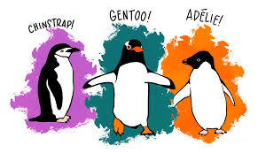
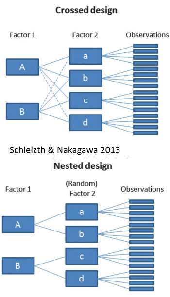
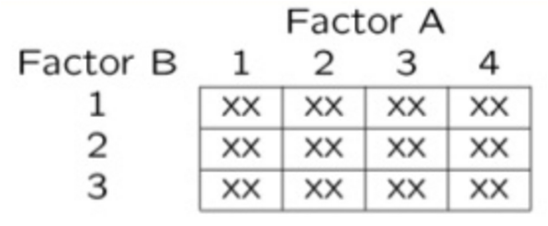
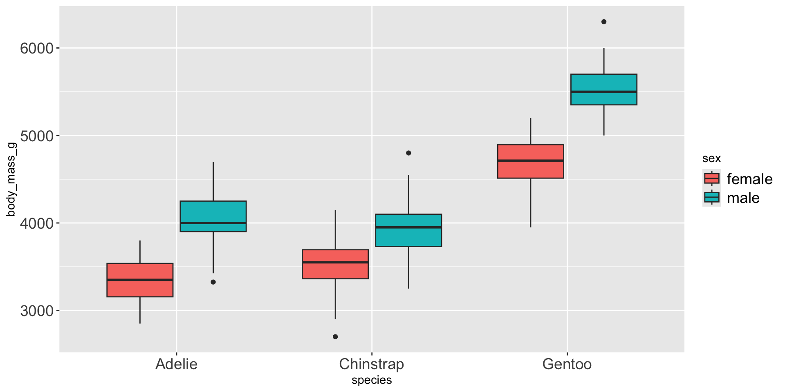

## # A tibble: 6 × 6
## species sex n mean_mass sd_mass se_mass
## <fct> <fct> <int> <dbl> <dbl> <dbl>
## 1 Adelie female 73 3369. 269. 31.5
## 2 Adelie male 73 4043. 347. 40.6
## 3 Chinstrap female 34 3527. 285. 48.9
## 4 Chinstrap male 34 3939. 362. 62.1
## 5 Gentoo female 58 4680. 282. 37.0
## 6 Gentoo male 61 5485. 313. 40.1Lecture 12 - Factorial ANOVA of Penguin Mass Balanced
ANOVA
- Analysis of variance: single and multi-factor designs
- Examples: diatoms, circadian rhythms
- Predictor variables: fixed vs. random
- ANOVA model
- Analysis and partitioning of variance
- Null hypothesis
- Assumptions and diagnostics
- Post F Tests - Tukey and others
- Reporting the results

2-factor designs (2-way ANOVA)
- very common in ecology
- can have more factors (e.g., 3-way ANOVA) but interpretation gets very challenging…
- Most multifactor designs: are factorial or nested
- We will cover a 2 Factor Anova - this could be fertilizer and sunlight for plant biomass produced…
- each can have an effect independently
- the effect of one factor may interact with the other factor
- in this example…
a low light and high light treatment might affect biomass
fertilizer also might affect plant biomass
but when you have higher light the high fertilizer treatment may grow better than expected

Consider two factors:
- Factorial/crossed:
every level of B in every level of A


In factorial designs
- look at two types of factor effects:
- Main effect of each factor (polling across other factor)
- Interaction effects; is there synergistic/ antagonistic effect of factors?

Balancing the Penguin Data
The dataframe of penguins is unbalanced - there are unequal samples per cell
## # A tibble: 3 × 3
## species female male
## <fct> <int> <int>
## 1 Adelie 73 73
## 2 Chinstrap 34 34
## 3 Gentoo 58 61## Minimum n = 34
## # A tibble: 3 × 3
## species female male
## <fct> <int> <int>
## 1 Adelie 34 34
## 2 Chinstrap 34 34
## 3 Gentoo 34 34Statistical Mode \(Y_{ijk} = \mu + \alpha_i + \beta_j + (\alpha\beta)_{ij} + \varepsilon_{ijk}\)
Where:
\(\mu\) = grand mean
\(\alpha_i\) = effect of species i
\(\beta_j\) = effect of sex j
\((\alpha\beta)_{ij}\) = interaction effect
\(\varepsilon_{ijk}\) = random error

\[y_{ijk} = \mu + \alpha_i + \beta_j + (\alpha\beta)_{ij} + \varepsilon_{ijk}\]
\[y_{ijk} = \mu + \alpha_i + \beta_j + (\alpha\beta)_{ij} + \varepsilon_{ijk}\]
- \(y_{ijk}\): value of the kth observation from jth and ith combination of B and A (sex m of species y)
- µ: overall mean (overall mass)
- αi: effect of the ith level of A, pooling across all levels of B: µi- µ (difference between average mass in all “males” for species x and overall mean)
\[y_{ijk} = \mu + \alpha_i + \beta_j + (\alpha\beta)_{ij} + \varepsilon_{ijk}\]
- Βj: effect of jth level of B, pooling across all levels of A: µj- µ (difference between average mass in all males treatments and overall mean)
- (αβ)ij: effect of interaction of ith level of A and jth level of B (µij - µi - µj + µ).
- Does effect of B depend on level of A? (is effect of sex different in the 3 species?)
\[y_{ijk} = \mu + \alpha_i + \beta_j + (\alpha\beta)_{ij} + \varepsilon_{ijk}\]
- Model 2 ANOVA rare in ecology
- Model 3 interpretation is different:
- βj: random variable measuring variance in y across all possible levels of B, pooling across all levels of A
- (αβ)ij is random variable measuring variance of interaction between A and B across all possible levels of B (“is effect of A consistent across all possible levels of B that could have been chosen?”)
SSAB: Interaction Effects
- SSAB is SS of cell means minus marginal means plus overall mean

## Type III Sums of Squares ANOVA:
## Anova Table (Type III tests)
##
## Response: body_mass_g
## Sum Sq Df F value Pr(>F)
## (Intercept) 3557308900 1 38701.5271 < 2.2e-16 ***
## species 87725999 2 477.2049 < 2.2e-16 ***
## sex 21988483 1 239.2224 < 2.2e-16 ***
## species:sex 1672776 2 9.0994 0.0001657 ***
## Residuals 18199467 198
## ---
## Signif. codes: 0 '***' 0.001 '**' 0.01 '*' 0.05 '.' 0.1 ' ' 1The Challenge of Unbalanced Data
- Real-world data is often unbalanced:
- Unequal sample sizes across groups
- Missing data patterns
- Natural variation in sampling
- Key Issues:
- Type I, II, and III SS give different results
- Order of terms matters for Type I SS
- Marginal means ≠ Simple averages Interpretation becomes complex
Statistical Model (same as balanced): \[Y_{ijk} = \mu + \alpha_i + \beta_j + (\alpha\beta)_{ij} + \varepsilon_{ijk}\]
But parameter estimation differs!
Data Preparation - Using Natural Unbalanced Data
## [1] "Unbalanced sample sizes:"
## # A tibble: 6 × 3
## species sex n
## <fct> <fct> <int>
## 1 Adelie female 73
## 2 Adelie male 73
## 3 Chinstrap female 34
## 4 Chinstrap male 34
## 5 Gentoo female 58
## 6 Gentoo male 61
## [1] "Total N = 333"
## [1] "Imbalance ratio = 2.15"Computing EMMs
## Species EMMs (model-based):
## species emmean SE df lower.CL upper.CL
## Adelie 3706 25.6 327 3656 3757
## Chinstrap 3733 37.5 327 3659 3807
## Gentoo 5082 28.4 327 5026 5138
##
## Results are averaged over the levels of: sex
## Confidence level used: 0.95
##
##
## Sex EMMs (model-based):
## sex emmean SE df lower.CL upper.CL
## female 3859 25.3 327 3809 3908
## male 4489 25.2 327 4440 4539
##
## Results are averaged over the levels of: species
## Confidence level used: 0.95
## contrast estimate SE df t.ratio p.value
## Adelie female - Chinstrap female -193 73.5 198 -2.620 0.0973
## Adelie female - Gentoo female -1346 73.5 198 -18.310 <0.0001
## Adelie female - Adelie male -714 73.5 198 -9.710 <0.0001
## Adelie female - Chinstrap male -604 73.5 198 -8.220 <0.0001
## Adelie female - Gentoo male -2190 73.5 198 -29.789 <0.0001
## Chinstrap female - Gentoo female -1154 73.5 198 -15.690 <0.0001
## Chinstrap female - Adelie male -521 73.5 198 -7.090 <0.0001
## Chinstrap female - Chinstrap male -412 73.5 198 -5.600 <0.0001
## Chinstrap female - Gentoo male -1998 73.5 198 -27.169 <0.0001
## Gentoo female - Adelie male 632 73.5 198 8.600 <0.0001
## Gentoo female - Chinstrap male 742 73.5 198 10.090 <0.0001
## Gentoo female - Gentoo male -844 73.5 198 -11.480 <0.0001
## Adelie male - Chinstrap male 110 73.5 198 1.490 0.6711
## Adelie male - Gentoo male -1476 73.5 198 -20.079 <0.0001
## Chinstrap male - Gentoo male -1586 73.5 198 -21.569 <0.0001
##
## P value adjustment: tukey method for comparing a family of 6 estimatesTukey HSD Comparisons
## Species pairwise comparisons (Tukey):
## contrast estimate SE df t.ratio p.value
## Adelie - Chinstrap -26.9 45.4 327 -0.593 0.8241
## Adelie - Gentoo -1376.1 38.2 327 -36.007 <0.0001
## Chinstrap - Gentoo -1349.2 47.0 327 -28.682 <0.0001
##
## Results are averaged over the levels of: sex
## P value adjustment: tukey method for comparing a family of 3 estimates
##
##
## Sex effect within each species:
## species = Adelie:
## contrast estimate SE df t.ratio p.value
## female - male -675 51.2 327 -13.174 <0.0001
##
## species = Chinstrap:
## contrast estimate SE df t.ratio p.value
## female - male -412 75.0 327 -5.487 <0.0001
##
## species = Gentoo:
## contrast estimate SE df t.ratio p.value
## female - male -805 56.7 327 -14.188 <0.0001Interaction Contrasts
## Sex effect (Male - Female) by species:
## Species Sex_Effect
## 1 Adelie -675
## 2 Chinstrap -412
## 3 Gentoo -805
##
##
## Interaction interpretation:
## [1] "Sex effects differ across species"Key Takeaways
Unbalanced Designs:
Challenges: - Type I SS depends on order - Simple means ≠ EMMs - Reduced power for interactions - Complex interpretation
Solutions: - Use Type III SS for main effects - Report EMMs, not simple means - Check assumptions carefully - Consider impact of imbalance
Recommendations:
- Always report:
- Sample sizes per cell
- Type of SS used
- EMMs with CIs
- Visualization:
- Show actual data points
- Include error bars
- Note unequal sample sizes
- Interpretation:
- Focus on effect sizes
- Consider practical significance
- Acknowledge limitations